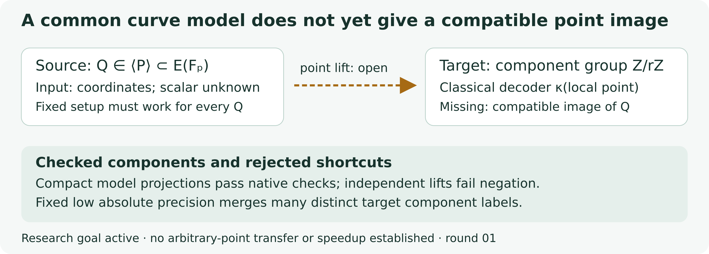
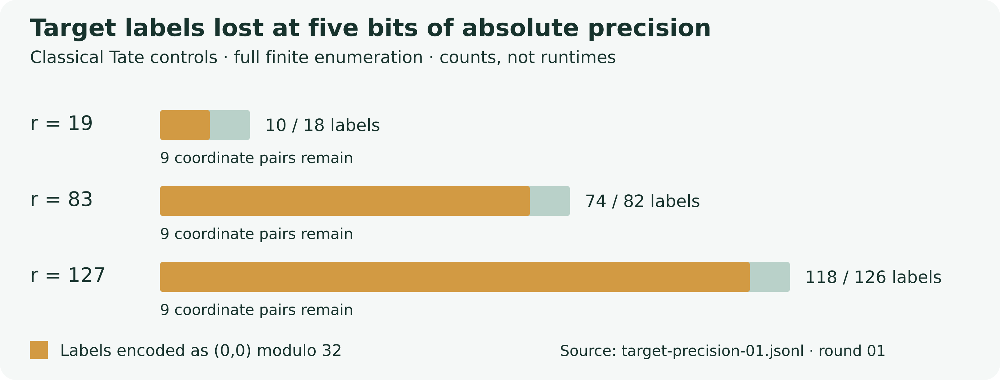

16 November 2026 — research round one
The goal is an efficient map from an arbitrary public point on a prime-field curve to a demonstrably easier target, preserving the unknown scalar. That map has not been constructed; the goal remains active. This round checks one curve-model component and rejects two specific shortcuts. [pcc:unverified]

On the rational curve \(y^2+xy=x^3-64x+288\), use \(S=(4,8)\) and \(T=(2,12)\). Its split multiplicative component group at 2 is \(\mathbf Z/5\mathbf Z\). Cremona’s consistent component labels are \(\kappa(S)=2\), \(\kappa(T)=1\). At the good source prime 59, the group has 65 points and cofactor 13:
| Encoded source point | Independently lifted component label |
|---|---|
| \(P=\operatorname{red}_{59}([13]S)=(11,28)\) | \(1\) |
| \(Q=\operatorname{red}_{59}([13]T)=(11,20)=-P\) | \(3\) |
Both source points have order five. A homomorphism sending \(P\) to \(1\) must send \(Q\) to \(-1=4\), so these labels fail. The exact rational kernel witness \(U=[13](T-[4]S)\) reduces to \(O\) at 59 but has component label \(4\). Lean checks the literal source points, orders, negation and label incompatibility. The component interpretation is a written argument using the classical local map. [pcc:unverified]
For an odd source prime \(p\) and public order \(r\), store an integral model as \(A_1=1+2^{r+1}c_1\), \(A_i=2^{r+1}c_i\) for \(i=2,3,4\), and \(A_6=2^r c_6\). The small \(c_i\) are chosen by modular arithmetic, with \(c_6\) odd. The model reduces to the specified source coefficients; its classical local type at 2 is split \(I_r\). Its component quotient has order \(r\), rather than being an elliptic point group over \(\mathbf F_2\). [pcc:unverified]
Checks cover three bounded models, six rejected mutations and one 256-bit coefficient projection against OpenSSL. Expanding \(2^r\) takes \(r+1\) bits; no point lift is provided. [pcc:unverified]
The next candidate would extract a label from a consistently selected torsion branch. A fixed low-precision coordinate pair is insufficient for that target. The separate classical Tate control has period \(q=2^r\) and auditor parameters \(u=2^k\), \(1\le k<r\). These are target-side known labels, never an evaluator for unknown source scalars. [pcc:unverified]

At absolute precision \(N\), every label \(N\le k\le r-N\) has both coordinates zero modulo \(2^N\). All nine predeclared native cases, \(r\in\{19,83,127\}\) and \(N\in\{3,5,8\}\), match the predicted collision counts. The chart shows the three \(N=5\) cases. Every enumerated residue is also checked against the reduced cubic. No runtime is measured. [pcc:unverified]
This rejects only fixed low absolute precision as a faithful encoding. Valuations stored separately or a direct component-label extractor remain open possibilities. A usable extractor must match the same global torsion branch and places for every input, without reconstructing the scalar or silently changing the target’s orientation.
The unchanged local Lean gate audits 16 theorems, zero
failing, zero trusted native exceptions. The explicit axiom
audit uses only the standard foundations. Claim
PCC-20261116-a3e9e1 concerns the concrete label
incompatibility; PCC-20261116-4d7a4e and
PCC-20261116-3bd2b2 retain native observations. All remain
unsigned. The nodal polynomial identity has native receipt
IDC1hcad63e1a0fbc75b5 and an exact Lean proof pointer; the
issuer is a producer check, not independent Rust replay.
[pcc:unverified]
The next obligation is a component extractor over an actual torsion algebra with source-branch data, followed by all-input orientation controls and growing-order costs. A compact description of an algebraic root alone does not implement its valuation at another prime. This round establishes no novel efficient map, general impossibility theorem or practical attack.
Sources: Cremona (2008), sections 1–2; Silverman’s lifting framework; Gaudry–Hess–Smart; the committed CT83–94 notes. Full sources, commands, raw receipts and proof boundaries are in the study’s README, GOAL, proof map, and receipts.